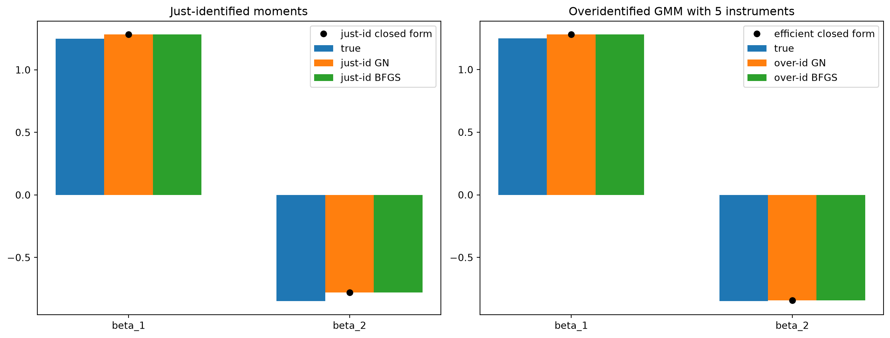
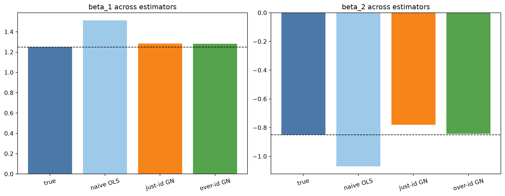

import matplotlib.pyplot as plt
import numpy as np
from crabbymetrics import OLS, Optimizers
np.set_printoptions(precision=4, suppress=True)GMM With Optimizers
This page constructs GMM objectives explicitly with Optimizers to show the scalar-objective and residual interfaces. For ordinary moment estimation, use the first-class GMM estimator, which handles weighting, convergence, and covariance together.
The setting is deliberately chosen to go beyond the closed-form TwoSLS wrapper: five excluded instruments, two-step weighting, and a J-statistic.
1 Imports
2 Simulate A Linear IV Problem
We generate two endogenous regressors, x1 and x2, from five excluded instruments. Endogeneity comes from latent shocks shared with the structural error, so naive OLS is biased.
rng = np.random.default_rng(20260321)
n = 4000
beta_true = np.array([1.25, -0.85])
Z = rng.normal(size=(n, 5))
v = rng.normal(size=(n, 2))
eps = rng.normal(size=n)
Pi = np.array(
[
[0.9, 0.1],
[0.5, -0.3],
[-0.4, 0.8],
[0.3, 0.2],
[-0.2, 0.5],
]
)
X = Z @ Pi + v
u = 0.7 * v[:, 0] - 0.55 * v[:, 1] + 0.35 * eps
y = X @ beta_true + u
ols = OLS()
ols.fit(X, y)
ols_beta = np.asarray(ols.summary()["coef"])
print("true beta:", beta_true)
print("naive OLS beta:", np.round(ols_beta, 4))true beta: [ 1.25 -0.85]
naive OLS beta: [ 1.5118 -1.0694]3 Moment Functions
For linear IV, the sample moment vector is just
gbar(theta) = Z' (y - X theta) / n.
That is enough to drive both a scalar GMM criterion and a least-squares residual system.
def sample_moments(theta, x, y, z):
resid = y - x @ theta
return z.T @ resid / x.shape[0]
def moment_jacobian(theta, x, y, z):
del theta, y
return -(z.T @ x) / x.shape[0]
def gmm_criterion(theta, x, y, z, weight):
g = sample_moments(theta, x, y, z)
return float(g @ weight @ g)
def gmm_gradient(theta, x, y, z, weight):
g = sample_moments(theta, x, y, z)
G = moment_jacobian(theta, x, y, z)
return 2.0 * G.T @ (weight @ g)
def whitened_residual(theta, x, y, z, weight_root):
return weight_root @ sample_moments(theta, x, y, z)
def whitened_jacobian(theta, x, y, z, weight_root):
return weight_root @ moment_jacobian(theta, x, y, z)
def closed_form_linear_gmm(x, y, z, weight):
zx = z.T @ x
zy = z.T @ y
return np.linalg.solve(zx.T @ weight @ zx, zx.T @ weight @ zy)
def omega_hat(theta, x, y, z):
resid = y - x @ theta
gi = z * resid[:, None]
return gi.T @ gi / x.shape[0]
def make_weight_root(weight):
return np.linalg.cholesky(weight).TThe two optimizer interfaces line up naturally with GMM:
Optimizers.minimize_bfgswants a scalar criterion and its gradientOptimizers.minimize_gauss_newton_lswants a residual vector and its Jacobian
If we whiten the moments as r(theta) = W^{1/2} gbar(theta), then minimizing ||r(theta)||^2 is exactly the same point-estimate problem as minimizing the usual quadratic GMM criterion.
4 Just-Identified GMM
To get a just-identified problem with two parameters, we keep only two of the five instruments:
Z_just = Z[:, :2]
W_just = np.eye(Z_just.shape[1])
W_just_root = make_weight_root(W_just)
theta0 = np.zeros(X.shape[1])
gn_just = Optimizers.minimize_gauss_newton_ls(
lambda theta: whitened_residual(theta, X, y, Z_just, W_just_root),
theta0,
lambda theta: whitened_jacobian(theta, X, y, Z_just, W_just_root),
max_iterations=200,
)
bfgs_just = Optimizers.minimize_bfgs(
lambda theta: gmm_criterion(theta, X, y, Z_just, W_just),
theta0,
lambda theta: gmm_gradient(theta, X, y, Z_just, W_just),
max_iterations=200,
)
closed_just = closed_form_linear_gmm(X, y, Z_just, W_just)
print("closed-form just-id beta:", np.round(closed_just, 4))
print("Gauss-Newton just-id beta:", np.round(gn_just["x"], 4))
print("BFGS just-id beta:", np.round(bfgs_just["x"], 4))closed-form just-id beta: [ 1.2838 -0.7806]
Gauss-Newton just-id beta: [ 1.2838 -0.7806]
BFGS just-id beta: [ 1.2838 -0.7806]In this linear case the Jacobian is constant, so Gauss-Newton is especially natural. The BFGS result should land on the same answer because both optimizers are solving the same moment problem, just through different interfaces.
5 Overidentified GMM With Five Instruments
Now we use all five instruments. First we run a one-step GMM with identity weighting. Then we estimate the moment covariance and do a second-step efficient GMM fit.
W_identity = np.eye(Z.shape[1])
W_identity_root = make_weight_root(W_identity)
first_step = Optimizers.minimize_gauss_newton_ls(
lambda theta: whitened_residual(theta, X, y, Z, W_identity_root),
theta0,
lambda theta: whitened_jacobian(theta, X, y, Z, W_identity_root),
max_iterations=200,
)
Omega = omega_hat(first_step["x"], X, y, Z)
W_eff = np.linalg.inv(Omega + 1e-10 * np.eye(Omega.shape[0]))
W_eff_root = make_weight_root(W_eff)
gn_over = Optimizers.minimize_gauss_newton_ls(
lambda theta: whitened_residual(theta, X, y, Z, W_eff_root),
first_step["x"],
lambda theta: whitened_jacobian(theta, X, y, Z, W_eff_root),
max_iterations=200,
)
bfgs_over = Optimizers.minimize_bfgs(
lambda theta: gmm_criterion(theta, X, y, Z, W_eff),
first_step["x"],
lambda theta: gmm_gradient(theta, X, y, Z, W_eff),
max_iterations=200,
)
closed_over = closed_form_linear_gmm(X, y, Z, W_eff)
j_stat = n * gmm_criterion(gn_over["x"], X, y, Z, W_eff)
print("first-step beta:", np.round(first_step["x"], 4))
print("closed-form efficient beta:", np.round(closed_over, 4))
print("Gauss-Newton efficient beta:", np.round(gn_over["x"], 4))
print("BFGS efficient beta:", np.round(bfgs_over["x"], 4))
print("J-statistic:", round(float(j_stat), 4), "with df =", Z.shape[1] - X.shape[1])first-step beta: [ 1.2813 -0.8437]
closed-form efficient beta: [ 1.2815 -0.8435]
Gauss-Newton efficient beta: [ 1.2815 -0.8435]
BFGS efficient beta: [ 1.2815 -0.8436]
J-statistic: 1.9654 with df = 3This is now the pattern packaged into the GMM class:
- define the sample moments
- run a first-step fit with a simple weight matrix
- estimate the moment covariance
- update the weight matrix
- rerun the optimizer for the second step
6 Compare The Estimates
labels = ["beta_1", "beta_2"]
xpos = np.arange(len(labels))
width = 0.22
fig, axes = plt.subplots(1, 2, figsize=(12.8, 4.8), constrained_layout=True)
axes[0].bar(xpos - width, beta_true, width=width, label="true")
axes[0].bar(xpos, gn_just["x"], width=width, label="just-id GN")
axes[0].bar(xpos + width, bfgs_just["x"], width=width, label="just-id BFGS")
axes[0].plot(xpos, closed_just, "o", color="black", label="just-id closed form")
axes[0].set_xticks(xpos)
axes[0].set_xticklabels(labels)
axes[0].set_title("Just-identified moments")
axes[0].legend()
axes[1].bar(xpos - width, beta_true, width=width, label="true")
axes[1].bar(xpos, gn_over["x"], width=width, label="over-id GN")
axes[1].bar(xpos + width, bfgs_over["x"], width=width, label="over-id BFGS")
axes[1].plot(xpos, closed_over, "o", color="black", label="efficient closed form")
axes[1].set_xticks(xpos)
axes[1].set_xticklabels(labels)
axes[1].set_title("Overidentified GMM with 5 instruments")
axes[1].legend()
plt.show()
estimator_labels = [
"true",
"naive OLS",
"just-id GN",
"over-id GN",
]
estimate_stack = np.vstack(
[
beta_true,
ols_beta,
np.asarray(gn_just["x"]),
np.asarray(gn_over["x"]),
]
)
fig, axes = plt.subplots(1, 2, figsize=(12.0, 4.6), constrained_layout=True)
for j, ax in enumerate(axes):
ax.bar(estimator_labels, estimate_stack[:, j], color=["#4c78a8", "#9ecae9", "#f58518", "#54a24b"])
ax.axhline(beta_true[j], color="black", linewidth=1.0, linestyle="--")
ax.set_title(f"{labels[j]} across estimators")
ax.tick_params(axis="x", rotation=15)
plt.show()
The main point is not that Gauss-Newton always dominates BFGS. The point is that both are already enough to express GMM cleanly:
- Gauss-Newton is natural when you want to think of GMM as a least-squares problem in the moment vector
- BFGS is natural when you want to work directly with the scalar quadratic criterion and its gradient
7 Takeaway
- Just-identified IV moments already fit cleanly into
Optimizers.minimize_gauss_newton_ls. - Overidentified GMM only needs one more layer: estimate
Omega, formW = Omega^{-1}, and rerun the optimizer. - The current optimizer surface was already expressive enough to build the
GMMclass, especially for linear moments where the Jacobian is simple and often constant.
Those class-level responsibilities are now:
- own the moment, Jacobian, and per-observation score callbacks
- manage one-step versus two-step weighting
- cache
theta,Omega,W, and the J-statistic - expose
summary()and bootstrap logic analogously toMEstimator